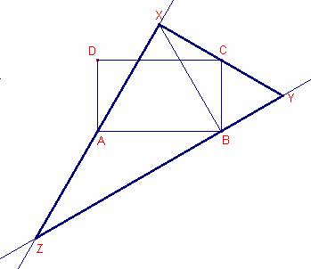
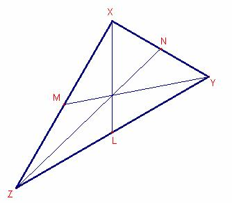
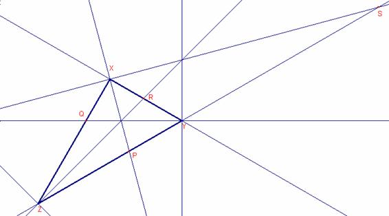

Problema 304.
Dado el rectángulo ABCD, con a =AB (base) y b = BC ( la altura), y a>b desde la base AB se construye internamente el triángulo equilátero ABX, y desde la altura, b= BC, se construye exteriormente un triángulo equilátero BCY. Las rectas AX y BY se cortan en Z.
Se pide :
a) Hallar la relación entre la base y la altura del rectángulo para que los puntos X, C e Y, estén alineados.
b) Caracterizar y calcular en este caso todos los elementos significativos: lados, ángulos, medianas, bisectrices interiores y exteriores, radio inscrito y radio circunscrito del triángulo XYZ.
Romero, JB. (2006). Comunicación personal
SoluciónSolución de Ricard Peiró i Estruch Profesor de
Matemáticas del IES 1 de Xest (València) (16 de marzo de 2006)

a)
Para que los puntos X, C y Y estén alineados el
ángulo tiene que ser llano.
por
ser el triángulo equilátero.
 por
ser ABCD un rectángulo.
por
ser ABCD un rectángulo.
Entonces por estar alineados el ángulo 
En este caso  .
.
Por tanto el triángulo  es isósceles
es isósceles
y el triángulo es rectángulo. ,  .
.
Aplicando el teorema de Pitágoras al triángulo rectángulo :
Entonces,  .
.
b)
Entonces, el triángulo es rectángulo.
, .
,  .
.
Aplicando el teorema de Pitágoras al triángulo  :
:
 .
.
Calculemos las medianas:

Sean  las medianas del triángulo
las medianas del triángulo
 .
.
La mediana sobre la hipotenusa de un triángulo rectángulo mide la mitad que
la hipotenusa, entonces,
 .
.
Aplicando el teorema de Pitágoras al triángulo rectángulo :
.
Aplicando el teorema de Pitágoras al triángulo rectángulo :
.
Calculemos las bisectrices interiores:

Sean les bisectrices
interiores del triángulo  .
.
Aplicando el teorema de los senos al triángulo  :
:
 ,
,
Aplicando razones trigonométricas al triángulo rectángulo
.
Aplicando razones trigonométricas al triángulo rectángulo 
. 
Calculemos las bisectrices exteriores:

Sean  las bisectrices
exteriores del triángulo
las bisectrices
exteriores del triángulo  .
.
,  .
.
Aplicando el teorema de los senos al triángulo :
,
Aplicando razones trigonométricas al triángulo rectángulo
.
Aplicando razones trigonométricas al triángulo rectángulo 
. 
Calculemos el radio de la circunferencia inscrita y la circunscrita.
En un triángulo rectángulo el radio R de la circunferencia circunscrita mide
la mitad de la hipotenusa.
.
En un triángulo rectángulo el radio r de la circunferencia inscrita mide el
semiperímetro menos la hipotenusa.
 .
.